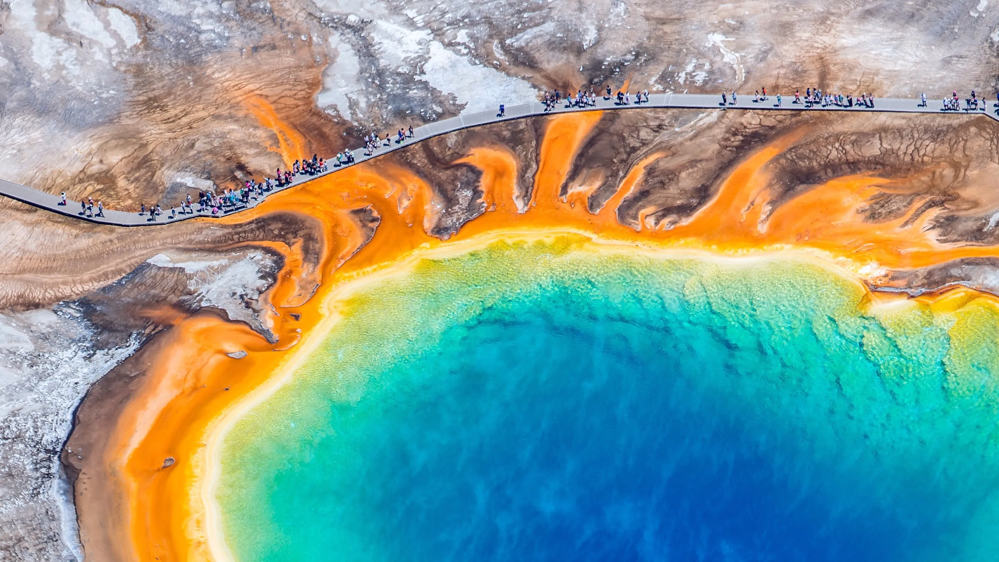
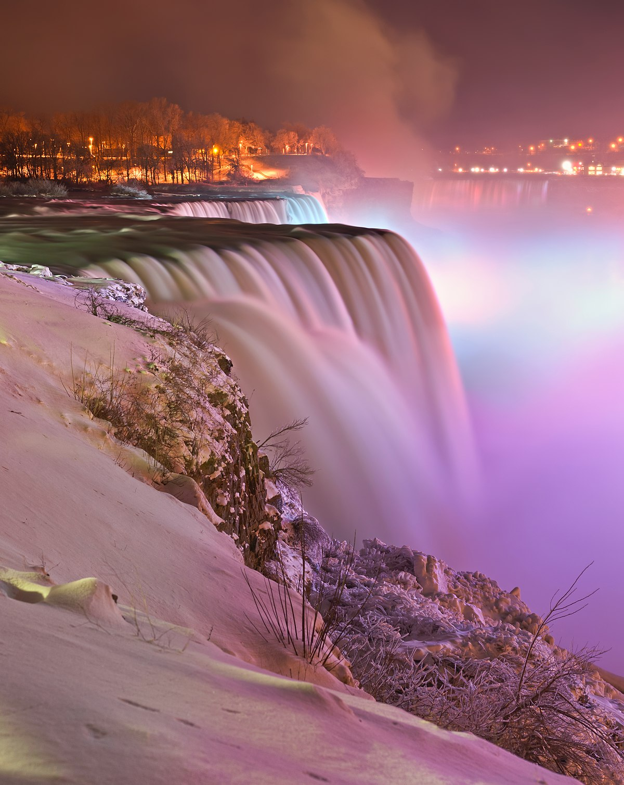

Embark on a Journey of Discovery with Our Travel Guide
Welcome to our dedicated travel page, where wanderlust meets practical guidance to fuel your passion for exploration. Here, we bring the world to your fingertips, offering a treasure trove of destinations, from the cobblestone streets of ancient cities to the pristine sands of secluded beaches. Our comprehensive guide is designed to inspire and inform, whether you're planning a serene retreat, an adventure-packed expedition, or a cultural immersion. Dive into detailed itineraries, insider tips, and stunning visuals that promise to elevate your travel experience. Join us as we navigate the globe, uncover hidden gems, and share the stories that make each journey unforgettable. Start your adventure here, and let the journey begin!
Lake Tahoe
- snow!
- inner tubing
- hiking

“When it comes to things to do in South Lake Tahoe, you can shred down the mountain from 10,067 ft. at Heavenly Mountain Resort's peak or you can dive into the depths of Lake Tahoe. It's more than 1600 ft. deep, making it one of the deepest lakes in North America. Needless to say, there's plenty of things to do in Lake Tahoe above and below the surface.”
“All parts of Lake Tahoe are beautiful and have something unique to offer. South Lake Tahoe is popular for its ski resorts like Heavenly, Sierra at Tahoe and Kirkwood ski resorts. South Lake Tahoe is also popular for its restaurants, shopping, casino resorts and vibrant nightlife.”
Photo Gallery

Yellowstone National Park
- view
- weather
- hiking

“Yellowstone National Park is a nearly 3,500-sq.-mile wilderness recreation area atop a volcanic hot spot. Mostly in Wyoming, the park spreads into parts of Montana and Idaho too. Yellowstone features dramatic canyons, alpine rivers, lush forests, hot springs and gushing geysers, including its most famous, Old Faithful. It's also home to hundreds of animal species, including bears, wolves, bison, elk and antelope.”
Photo Gallery


Niagara Falls
- Majestic
- weather
- Natural

Niagara Falls is located on the border between Canada and the United States. Connecting Lake Erie and Lake Ontario, Niagara Falls has the highest flow rate of any waterfall in North America. Niagara Falls draws in thousands of visitors every year, and for good reason. As such, there are numerous things that you can see while you visit the falls, and it is very easy to make a full trip out of seeing this wonderful sight.
Photo Gallery
